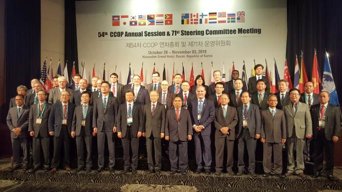
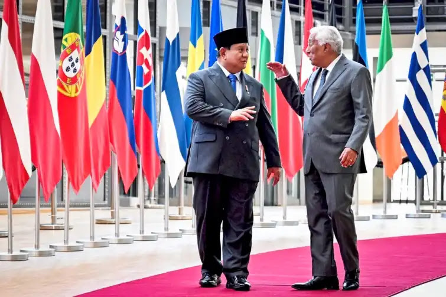
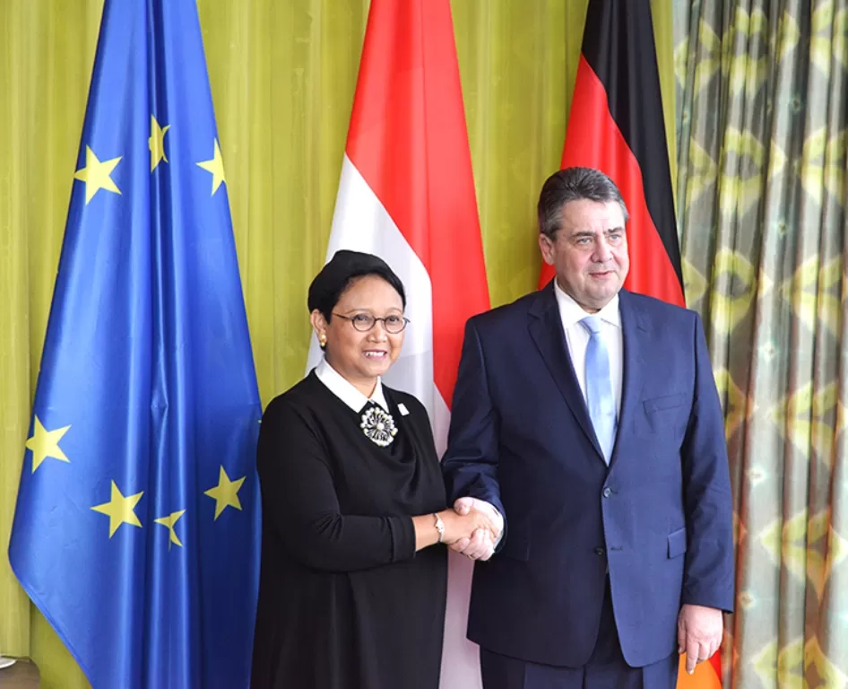
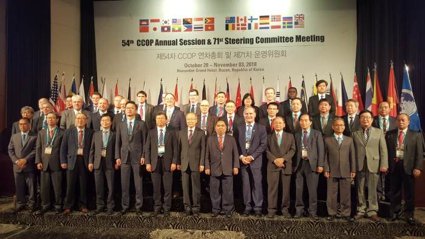
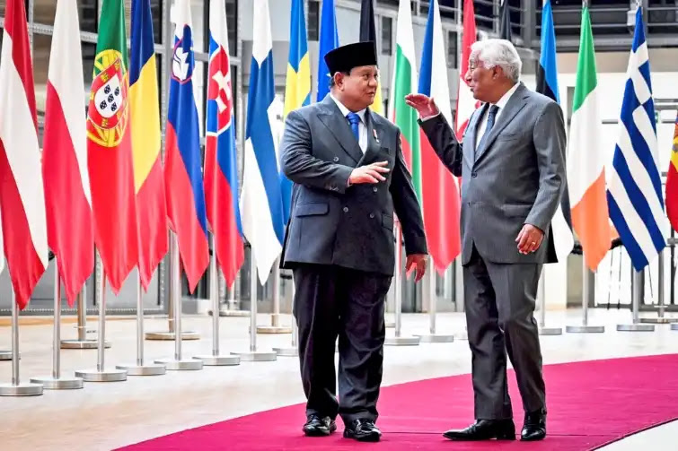
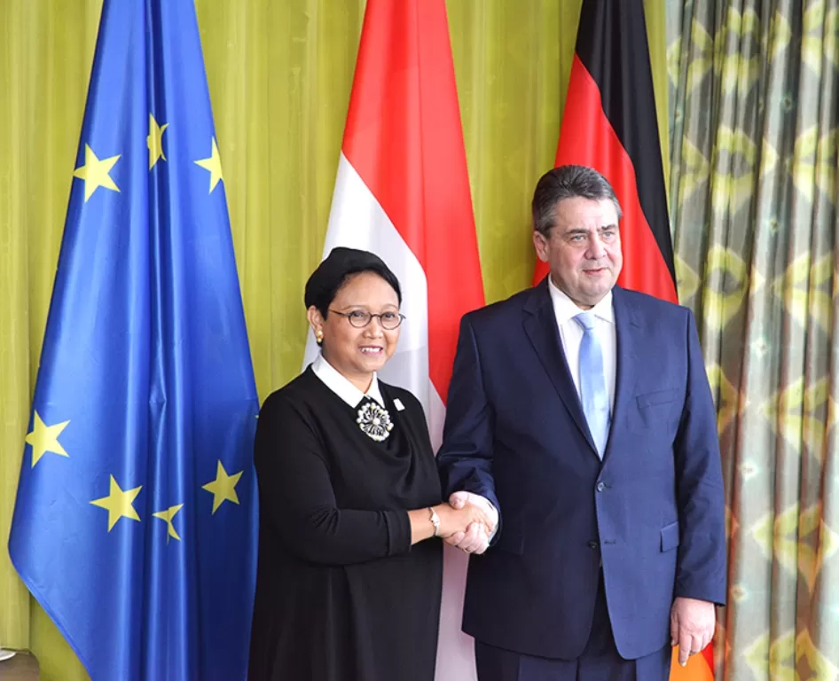

.png)
Kerjasama multilateral adalah bentuk kerjasama yang melibatkan lebih dari 2 Negara yang tergabung dalam organisasi internasional untuk mencapai tujuan bersama dalam bidang ekonomi, politik, sosial, budaya, pendidikan, keamanan, dan lingkungan. Kerjasama ini bertujuan untuk meningkatkan kesejahteraan dan pembangunan negara anggota, menjaga perdamaian dan keamanan dunia, menyelesaikan masalah global, memperkuat hubungan antarnegara secara damai, dan menyusun regulasi atau aturan internasional.
 





Peran Indonesia dalam kerjasama multilateral sangat aktif, termasuk kerja sama mengirim pasukan Garuda ke Palestina, Kongo, dan Lebanon. Indonesia juga aktif sebagai salah satu pendiri dan pemimpin ASEAN. Indonesia juga telah mendaftarkan budaya Indonesia ke UNESCO (batik, Wayang, Keris), terakhir Indonesia bekerja sama WHO dalam program vaksinasi nasional.
Hubungan dengan SDGs: Hubungan kerjasama Multilateral dengan SDGs adalah melibatkan banyak negara sehingga menjadi dasar utama lahirnya SDGs di PBB dan melalui kerja sama Multilateral, Negara-negara dapat menyesuaikan kebutuhan bersama dan tujuan bersama.
Hubungan dengan SDGs 4: Hubungan kerjasama Multilateral dengan SDGs 4 adalah, dikarenakan SDGs 4 telah dibantu melalui organisasi multilateral seperti UNESCO yang memberikan pendanaan, penelitian, dan standar pendidikan global. (“Education for All” - UNESCO), lalu negara-negara dapat belajar satu sama lain mengenai inovasi pendidikan.